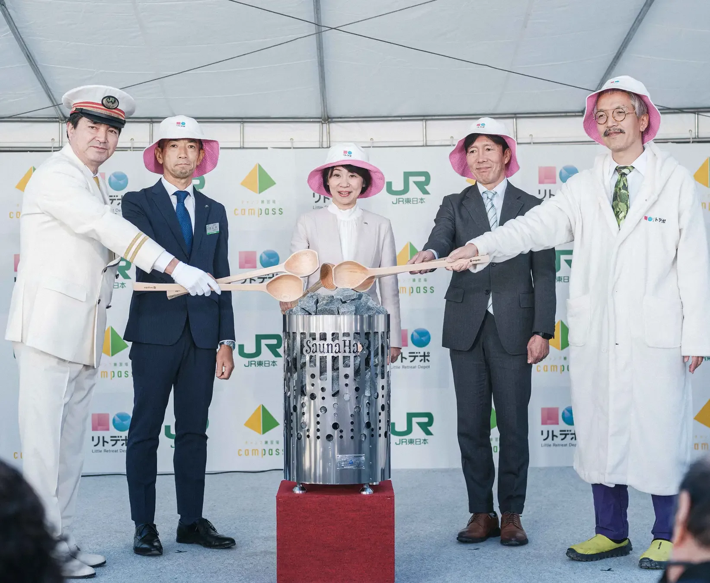
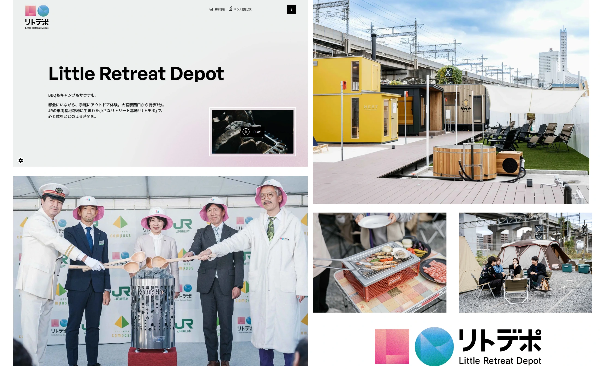

観光 / 健康・スポーツ / サウナ / 埼玉
リトルリトリートデポ


車両基地跡地を、日常の途中で立ち寄れるリトリート拠点へ。JR東日本が企画し、JR東日本都市開発が運営する「リトデポ」のクリエイティブ統括を担当しました。
01 / 背景とテーマ
輪郭を与える
大宮駅の近くに残る車両基地跡地。その鉄道の風景を活かし、心身を休める場所として捉え直しました。サウナをきっかけに、都市の遊休地に新しい過ごし方をつくる社会実験です。
02 / SCHEMAの担当範囲
全体を整える
SCHEMAはコンセプト設計からパートナー選定まで、全体のクリエイティブを統括。作り手や熱の方式が異なる7棟のサウナ小屋を集め、地域の個性に触れる体験を組み立てました。
03 / 取り組みの視点
枠組みをひらく
都市での小さな体験が、その土地への旅につながる入口へ。小屋の購入・導入を検討できる接点も備えています。完成を成果の終点とせず、日常に根づく使われ方を育てていく取り組みです。